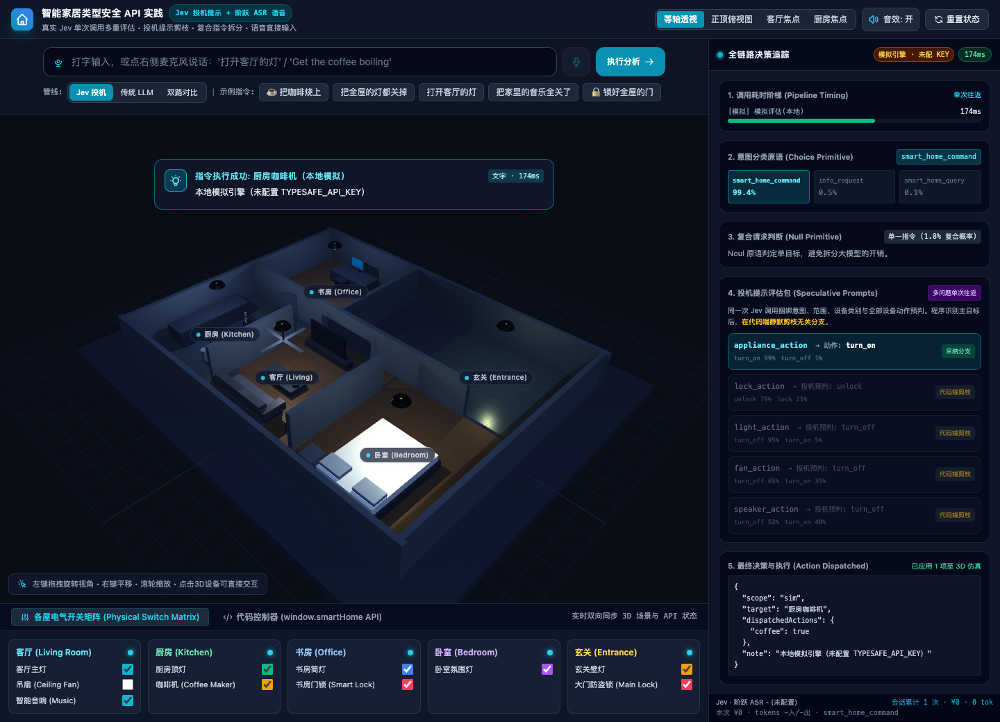
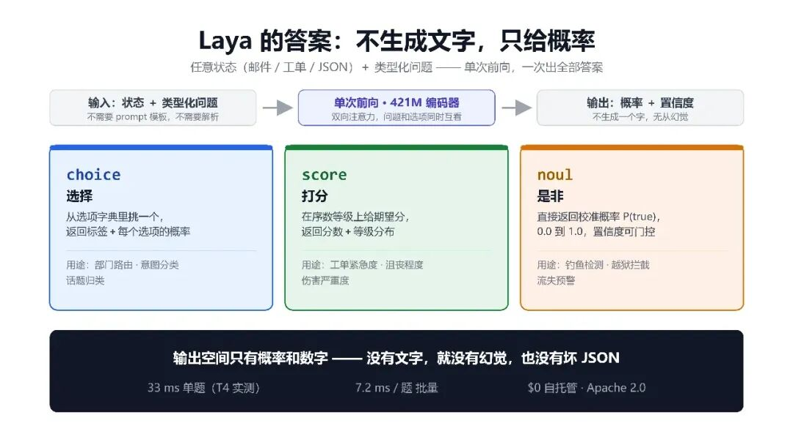
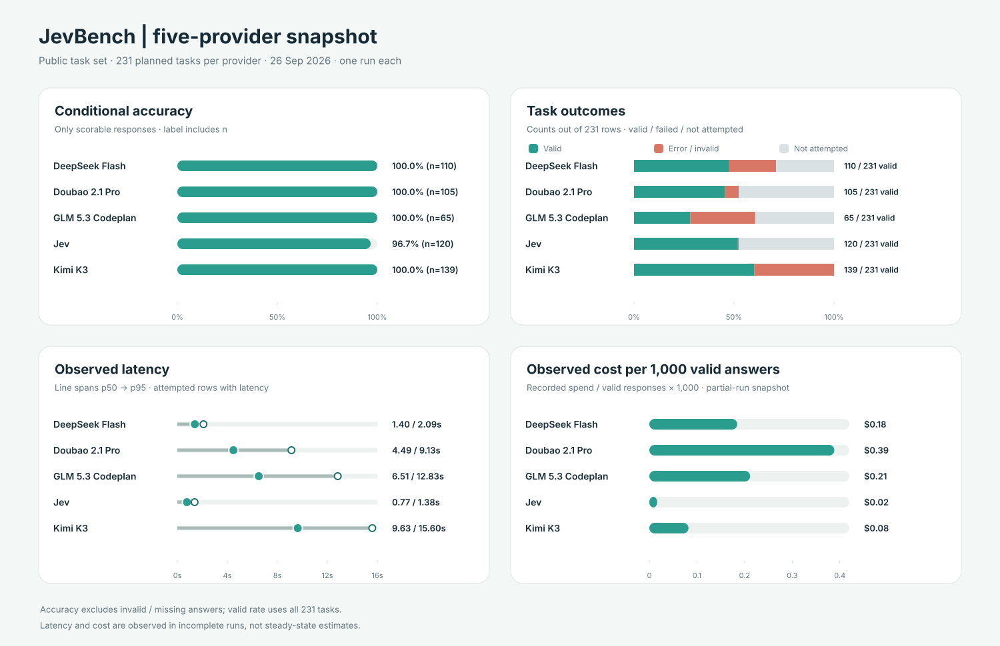
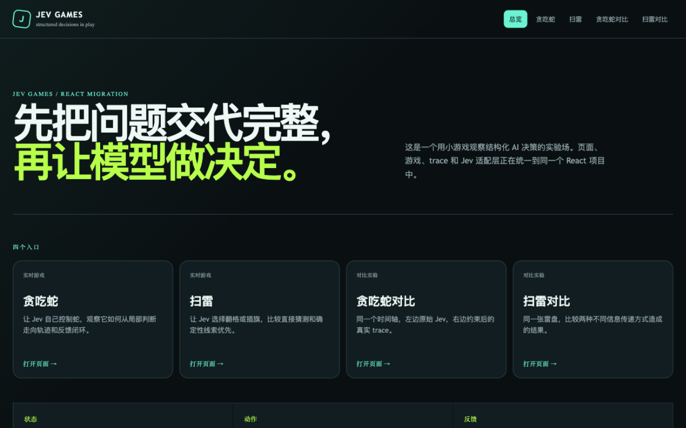
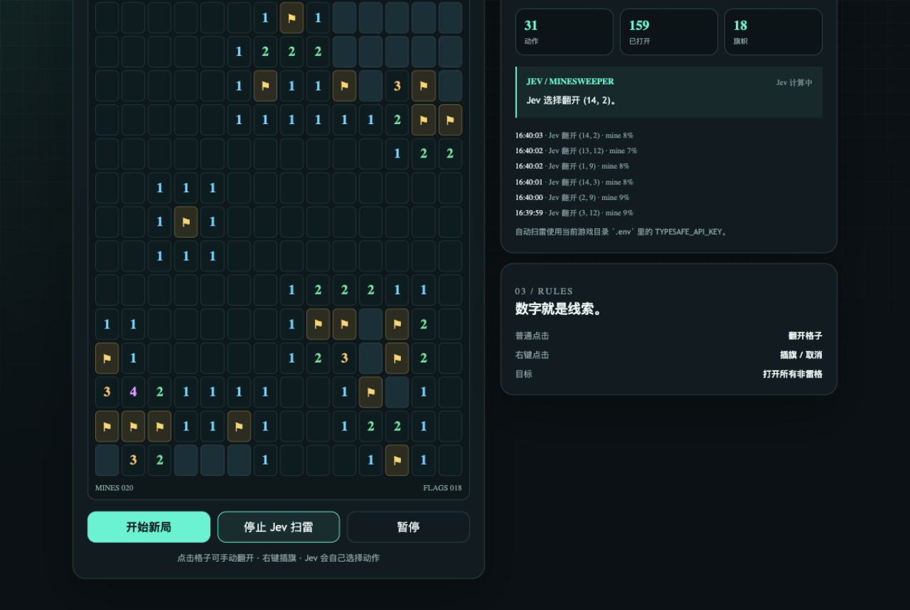
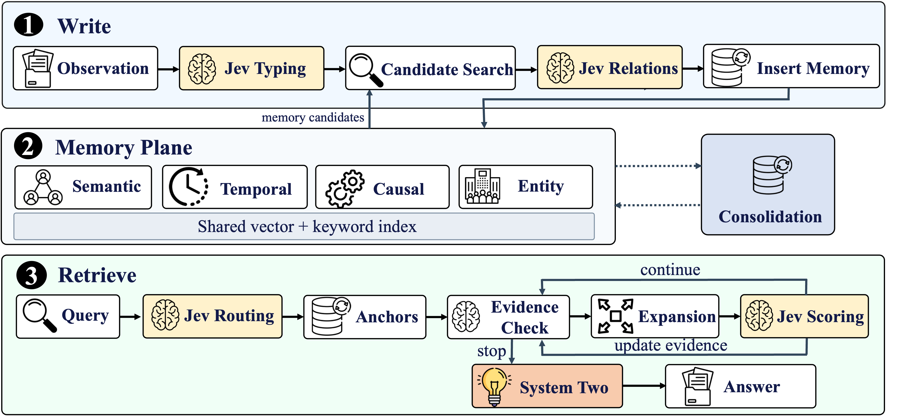
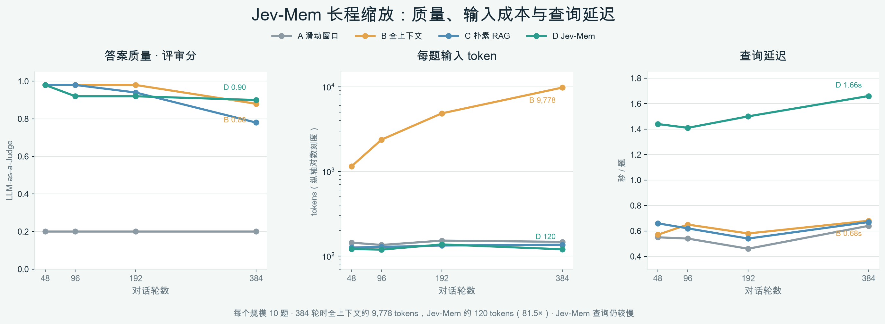
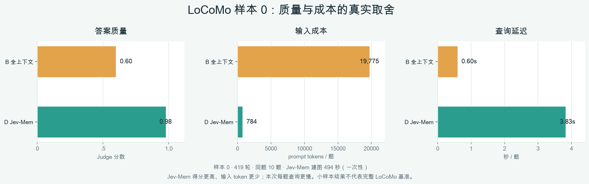

⚡ 适合中国宝宝的 Jev 入门教程：Jev Cookbook 开源了
跟着 Jupyter Notebook 动手，从三种问题原语、18 篇实战配方，走到语音智能家居、模型评测、Agent 集成与本地微调，系统学习 System One 判断模型的开发方法。
开源初心
哈喽，大家好！这次想和大家分享我们利用假期整理的开源教程——Jev Cookbook。
做这门课的起点很简单：我们想学 Jev 时，发现资料散落在文档、社交平台、项目仓库和论文里。看完一个演示，可能仍不知道从哪章入门、怎样复现实验，或者那个漂亮的结果是在什么题目、什么环境下得到的。我们希望把这些材料连成一条路，让第一次接触 Jev 的同学也能跟着 Notebook 一步步上手。
整理课程的过程，也让我们看到了 Jev 适合做什么，以及它会在哪些地方遇到限制。一个 Agent 要选择下一步工具；扫雷程序要在未知格子中选择落点；智能家居系统要把一句话变成设备动作。这些时刻，系统需要一个能被程序理解、检查和执行的判断。但模型判断并不自动等于正确动作：状态是否充分、概率是否可信、规则和权限由谁把关，都要在实验里讲清楚。
因此，我们不仅整理了入门概念和基础配方，也实际走访游戏、长期记忆、JevHarness、Agent 集成和本地模型等方向。每一个案例都尽量保留运行入口、观察方法和结果边界，让大家能自己动手，而不是只记住一张效果图。
在这里，模型负责理解状态并回答类型化问题；规则、权限、执行和反馈仍由程序管理。一轮判断可以写成：
观察状态 → 提出有限候选的问题 → 获得选项与概率 → 程序检查并执行 → 观察新状态生成式大模型依然适合写作、解释和开放式规划。Jev Cookbook 关注的是另一类高频环节：当问题可以明确表达为一次选择或打分时，怎样让 System One 的判断进入可观察的应用闭环。
项目简介
Jev Cookbook 是一套由 Datawhale 社区开源的 Jev 决策模型中文教程。全书 11 章，用中文解释 System One 的核心概念，并配上 Jupyter Notebook 和可运行项目：从 State、Noul、Choice、Score 出发，逐步走向 Cookbook 配方、模型评测、游戏应用、Agent 集成、前沿研究和 Laya 本地模型实践。
我们希望读者学完之后，既知道“Jev 可以放在哪里”，也知道“它在什么条件下有效、哪里还需要普通代码或生成式模型”。因此每章都会尽量回答：这个实验在验证什么，观察到了什么，结果又能支持多大的结论？
在这个项目中，你将获得：
🔍 从零认识 System One：用 State 和三种问题原语，把业务问题写成模型能回答、程序能处理的判断题。
🧪 跟着 Notebook 做实验：通过 18 篇实战配方，观察 RAG、工具选择、风险控制等场景里的模型输出。
🏠 做一个会响应语音的智能家居演示：把语音识别、意图判断、动作派发与 3D 模拟状态串起来。
📊 自己读模型对比结果：在固定任务中比较 Jev 与 DeepSeek、豆包、GLM、Kimi 等模型的有效回答、准确率、延迟和成本。
🎮 体验 12 个游戏与应用项目：从扫雷、贪吃蛇到浏览器操作，看决策怎样形成闭环，也看失败时如何复盘。
🧠 接触前沿与工程集成：阅读 Jev-Mem、JevHarness，尝试 Pi 扩展和 DeepSeek Harness 插件中的 Jev 判断。
🖥️ 探索本地模型：了解 Laya 的本地服务、数据构建、SFT、LoRA 与 RLCD-style 训练实验。
开源地址：datawhalechina/jev-cookbook。十一章总目录可以作为你的学习导航。
项目受众
如果你会读基础 Python，知道如何调用一次模型 API，就可以从第一章开始。你可以是正在做 Agent 或 RAG 的开发者，想研究模型评测的同学，也可以只是好奇：“除了生成一段话，模型还能怎样参与应用决策？”教程提供中文讲解与国内常见模型的对照场景，方便大家结合自己的开发环境学习。
前几章不要求你有模型训练经验。遇到概率、校准、风险控制等概念时，教程会把它们放回具体问题和实验中解释；走到本地模型章节，再逐步接触数据、训练与部署。
学习指南
我们把 11 章整理成五个阶段，从“先认识 Jev”走到“自己评测、集成和训练”。这样学下来，不必在零散资料之间反复拼接前后文。
第一部分：认识 Jev，学会提出判断题（第 1～3 章）。 从 System One 与生成式模型的分工开始，认识 State 与 Noul、Choice、Score 三种问题原语；再看概率输出怎样进入程序控制流。读完这一部分，你应该能说清楚：模型究竟判断了什么，代码又负责什么。
第二部分：边做实验，边理解应用方向（第 4～5 章）。 第四章准备了 18 个 Cookbook Notebook，覆盖 RAG、风险控制和结构化处理等配方；第五章把判断接入智能家居，让文字或语音指令经过识别、意图判断、动作派发和模拟设备状态更新。语音演示还会拆开观察 ASR 与 Jev 各自的耗时。这里开始，你会看到一个模型调用怎样变成完整的应用流程。
第三部分：与大模型对比，再看实际项目（第 6～7 章）。 第六章用固定的公开任务比较 Jev 与 DeepSeek、豆包、GLM、Kimi 等模型：除了看答对多少，还会检查有多少题真正得到有效回答、概率是否可信、响应是否够快、token 和费用怎么计算。这是一份有运行范围的实验快照，不能直接读成通用排名。第七章再把判断放进 12 个游戏与应用项目：模型选动作，环境检查并反馈，下一轮从新状态出发。
第四部分：探索记忆、Harness 和 Agent 集成（第 8～9 章）。 读 Jev-Mem，看判断模型怎样参与长期记忆的写入与检索；读 JevHarness，理解为什么要区分开发阶段的设计与运行阶段的显式控制流。接着用 Pi 扩展和 DeepSeek Harness 插件案例，学习把 Jev 接在 Agent 的工具选择与语义门控位置。模型给出一个高分选项后，程序仍要检查权限、参数和执行结果。
第五部分：尝试本地部署与微调（第 10～11 章）。 第十章以开源权重模型 Laya 为例，从本地服务走到数据构建、Head-only SFT、LoRA-SFT 与 RLCD-style 训练，再学习校准和评测。Laya 与 Jev 都采用类型化判断接口，但模型和训练结果不能视为相同。第十一章回到知识库，核对资料来源、实验版本和结论范围。这样，当你展示自己的效果图时，也能讲清楚它所依据的实验。
你可以按顺序学习；如果想先获得直观印象，可以先从原语实验、模型评测、游戏案例和本地推理几组现成材料入手，再带着问题回到对应章节。
实战项目效果演示
智能家居：一句话怎样变成设备动作？
在智能家居实验中，你可以从 3D 房间看到设备状态，再顺着执行追踪查看指令怎样被理解、选择分支并派发动作。它把“判断”从一个抽象的模型输出，变成页面上能追踪的状态变化。

图 1｜智能家居演练场。 图中展示的是本地模拟引擎的交互流程，便于观察系统组成；它不代表在线 API 的性能测量。
第二章：用 Jupyter 看懂三种问题原语
同一段状态，可以问成三种不同形状的问题：Choice 从给定选项中选择，Score 按有序等级打分，Noul 判断是或否。原语决定模型回答的结构，也决定后续代码怎样检查和使用结果。

图 2｜三种问题原语的输入与输出示意。 这张图来自知识库已有的 Laya 原理配图，用于直观介绍三种共享的原语形状；完整课程实验请打开第二章原语 Jupyter Notebook。Notebook 会用同一条中文工单分别提出三种问题，再练习批量提问、分数归一化与阈值判断。真实 API 输出需要配置密钥；阅读 Notebook 本身不要求启动训练或服务。
第六章：把 Jev 放进同一组模型评测
模型对比不只看“答对率”。下面这张现成评测图同时展示条件准确率、有效回答覆盖、响应延迟和观测成本，能帮助读者区分“答得准”“实际产出多”“响应快”和“费用低”这几件事。

图 3｜五个模型在 231 道计划题上的一次评测快照。 本次记录中，Jev 有效回答 120/231（51.9%），有效回答子集上的条件准确率为 96.7%，p50 延迟为 0.77 秒；Kimi 有效回答最多，为 139/231（60.2%）。因此，这组数据呈现的是不同维度的取舍：Jev 在本轮响应延迟和观测成本上较低，Kimi 的有效产出覆盖更高；不能把条件准确率或单次综合分单独读成完整能力排名。样本只来自一次运行，且五个 provider 都未完成全部计划题，详细口径见第六章模型评测。
第七章：在游戏里看清一次决策
第七章收录了 12 个项目，涵盖贪吃蛇、扫雷、狼人杀、迷宫、Browser Use、Mario 和智能家居等不同场景。游戏尤其适合入门：状态会变，候选动作有限，动作是否有效又能由环境立即裁定。

图 4｜Jev Games 统一入口。 从一个界面进入不同游戏与对照实验，先看整体，再追踪单次判断。

图 5｜扫雷决策界面。 棋盘提供数字约束，模型在候选格子间做判断；动作记录让你看到它选了哪里，游戏规则则负责裁定这一步的结果。成功揭开一格，不等于模型已经掌握所有局面；下一步仍要根据新棋盘重新判断。
马里奥：熟悉的游戏，也是一条可观察的决策闭环
马里奥案例把同一思路放进经典横版游戏：程序从模拟器状态整理玩家位置、地形和危险信息，Jev 在有限的控制动作中作出选择，控制器按动作推进若干帧，再读取新状态进入下一轮。
图 6｜Mario 案例中的游戏画面。 这张图用于让读者先认识任务环境；画面本身不是 Jev 的输入。模型读取的是程序从模拟器中整理出的结构化状态。仓库网页演示默认使用本地 mock pilot，因此这张静态游戏帧也不代表真实 Jev API 输出或通关成绩。可从第七章案例说明继续查看数据流和结果边界。
如果你正在开发 Agent，可以把棋盘换成网页，把“揭开格子”换成“点击按钮”：状态、候选动作、程序检查和环境反馈，仍然是同一条链。第七章项目总览列出了全部案例与入口。
看到这里，你可能会问：已经有大模型了，为什么还要 Jev？ 课程不会替你预设答案。第六章让不同模型在同一批计划任务上留下有效回答数、延迟与费用记录；第七章再把模型输出放进真实的动作流程。遇到开放式写作或长规划，可以继续用生成模型；遇到候选清楚、需要反复检查的判断题，则可以评估 Jev 是否合适。选哪条路线，最终要由任务效果和工程代价一起决定。
第八章：长期记忆不只是保存聊天记录
对话变长后，一个新的难题出现了：哪些信息值得记住？提问时又该取出哪一部分？Jev-Mem 把判断放进记忆写入、关系组织和检索路由，让生成模型在证据足够时再组织答案。

图 7｜Jev-Mem 的写入、记忆与检索。 这张架构图帮助你定位每次判断发生在何处，以及它怎样影响最终回答。图片来自 Jev-Mem 上游项目。
教程还保存了实验数据，方便你从“架构看起来合理”走到“结果究竟怎样”。在 48～384 轮的合成对话实验中，每个规模有 10 道题。全上下文方案的每题输入从约 1,144 增至 9,778 tokens；Jev-Mem 约为 120 tokens。到 384 轮时，两者本轮评审分分别为 0.88 和 0.90。输入减少了，但 Jev-Mem 的单题查询更慢，建立记忆也有一次性成本。

图 8｜长对话变长时，质量、输入量和查询延迟如何变化。 这是一轮本地实验，每个规模只有 10 道题；图表用于理解趋势和代价，不能当作多次重复后的稳定结论。
另一个 LoCoMo 样本包含 419 轮对话和 10 道题。本轮 Jev-Mem 与全上下文的评审分是 0.98 对 0.60，每题输入约 784 对 19,775 tokens；但查询延迟是 3.83 秒对 0.60 秒，Jev-Mem 建立记忆还需要约 494 秒。

图 9｜同一小样本上的质量与代价对照。 它显示了这组题目中筛选证据的潜力，也提醒我们把查询延迟和建图成本一起算进去。10 道题不足以代表完整 LoCoMo 结果，分数也受本轮 LLM 评审影响。第八章 README提供了实验过程、Notebook 和更多图表。
从研究案例走向自己的 Agent 与本地模型
看完记忆与游戏，接下来可以试着把 Jev 放进自己的 Agent。第九章从 Pi 扩展入门，再通过 DeepSeek Harness 的插件案例观察一条真实的协作链：主模型处理会话和工具流程，Jev 回答范围明确的判断题，插件代码组合结果并执行策略。你可以沿着记录逐步检查判断、授权与工具执行分别发生在哪里。
如果还想继续探索“能否在本地运行和调整这样的模型”，第十章以 Laya 为案例，介绍本地服务和几条微调路线。它提供了一条可动手研究的路径；训练实验的标签来源、评测切分与结果范围也会一起交代，方便你判断自己的复现结果是否可靠。

图 10｜Laya 本地推理演示。 这是知识库已有的本地 Snake 运行 GIF，画面同时显示当前动作、候选概率和推理耗时；它展示的是本地推理交互，不是微调结果图。想看 Jupyter 实验，可直接打开Head-only 中文微调 Notebook或Head-only、LoRA-SFT、RLCD-style 对照 Notebook。这两份 Notebook 源文件都在仓库中；其中全量对照 Notebook 默认关闭训练、下载和标注开关，实验过程与指标边界见第十章说明。
特别感谢
一套开源教程，最有价值的时刻是读者真的把案例跑起来，然后发现新的问题。感谢项目贡献者整理 Notebook、应用和实验资料，也感谢持续提出问题、复现结果和改进文档的社区伙伴。
如果你刚来到这里，可以从第一章开始，亲手改一个 State、换一组候选答案，再看输出怎样变化；也可以先打开第七章体验游戏，或用第八章的数据练习解读实验。遇到问题、做出新案例，欢迎在 GitHub Issues 中交流，或通过 Pull Request 一起完善教程。
希望 Jev Cookbook 能帮你从“让模型给出一个答案”，走到“知道怎样把一次判断放进可验证的系统”。
图片说明： 图 1 为仓库内的本地智能家居演练场；图 2 复用知识库中已有的三原语说明图，原语课程见对应 Notebook；图 3 复用第六章已保存的五模型评测面板；图 4、图 5 的游戏界面来自 Jev Games 上游项目；图 6 复用本仓库 Mario 案例中的游戏帧，案例说明了画面与模型输入的区别；图 7 引自 Jev-Mem 上游项目；图 8、图 9 根据本仓库 Notebook 的已保存实验数据重新绘制；图 10 复用知识库中已有的 Laya 本地 Snake 演示 GIF。图中的单次、小样本数据均按正文所述范围阅读。
<!-- 编辑备注：第七章说明 Jev Games 上游仓库未附 LICENSE。公众号外部发布前，请与上游确认截图转载授权及署名要求。 -->
快照未包含部分工程附件或配图；请通过上游链接或原始材料查看，收录范围见来源清单。